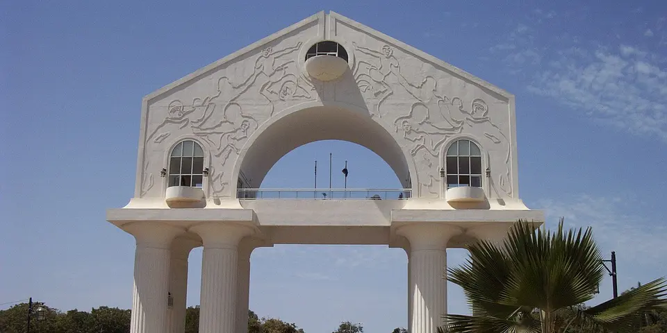

Sub-Saharan Africa
The Gambia on a budget
The Gambia is a narrow river country of rich birdlife, Atlantic beaches and easygoing villages, with chimps and hippos upriver near Janjanbureh.
Photo: Atamari, CC BY-SA 3.0, via Wikimedia Commons

Classic route
The coast near Banjul, then upriver to Janjanbureh. 1 week.
Before you go
Flights to Banjul: Skyscanner · Kiwi.com · Google Flights
Hostels and guesthouses in Banjul · Janjanbureh · Kololi · Makasutu
Tours and tickets: Banjul · Janjanbureh
Mobile data: The Gambia eSIM
Travel insurance: SafetyWing
How much 9 places in The Gambia cost
Daily budgets per person in US dollars: a hostel dorm or simple guesthouse, local food, local transport and the usual entry fees.
-
Banjul
A small, laid-back capital with the colorful Albert Market and city views from the top of Arch 22.
Bed $18 · Food $8 · Getting around $3 · Extras $3
Budget tip: Ferries to Barra are cheap. Bush taxis are the cheap way along the coast.
$32per day -
Janjanbureh
River trips to see chimps and hippos, and historic slave-trade sites on a quiet island town deep up the Gambia River.
Bed $15 · Food $6 · Getting around $6 · Extras $6
Budget tip: Boat trips run along the river to the chimp islands. Riverside camps upriver are cheap and often include meals.
$33per day -
Kololi
The lively Senegambia strip, with beaches, bars, live music and green vervet monkeys in the Bijilo forest.
Bed $18 · Food $8 · Getting around $3 · Extras $3
Budget tip: Eat at local chop shops, not the hotels. Bijilo forest walks are cheap.
$32per day -
Makasutu
A forest reserve where dugout canoes glide through mangrove creeks full of kingfishers and herons.
Bed $20 · Food $8 · Getting around $4 · Extras $15
Budget tip: Book a day visit rather than staying at the lodge. Combine it with Brikama market.
$47per day -
Tanji
A busy fishing beach where painted pirogues land the catch and fish is smoked on the shore, next to a bird reserve.
Bed $15 · Food $7 · Getting around $3 · Extras $3
Budget tip: Come in the late afternoon when the boats return. Bush taxis run along the coast road from Serekunda.
$28per day -
Kartong
A quiet southern village with superb birdwatching, a sea turtle project and a sacred crocodile pool.
Bed $15 · Food $7 · Getting around $4 · Extras $3
Budget tip: Stay in a simple eco-lodge to keep costs down. Bush taxis go from Brikama.
$29per day -
Abuko Nature Reserve
Small forest reserve near Banjul with crocodile pools, green and red colobus monkeys, hides overlooking wetlands and colourful birdlife.
Bed $18 · Food $8 · Getting around $3 · Extras $5
Budget tip: Go early for the best birding, and take a bush taxi from Serrekunda. Local bird guides cost little and improve sightings.
$34per day -
Wassu Stone Circles
Mysterious megalithic laterite stone circles over a thousand years old, part of the Senegambian stone circles UNESCO site, with a small museum.
Bed $15 · Food $6 · Getting around $8 · Extras $5
Budget tip: Visit en route between the coast and Janjanbureh. Ask the caretaker to explain the site, and combine it with the river boat trip.
$34per day -
Kunta Kinteh Island
Small River Gambia island with ruins of a slave trading fort, paired with Juffureh and Albreda village museums on the north bank.
Bed $15 · Food $7 · Getting around $8 · Extras $8
Budget tip: Arrange a boat from Albreda instead of booking a full tour from the coast. Take the Banjul to Barra ferry and bush taxis onward.
$38per day
Know before you go
The Gambia on a budget: the basics
Currency
$1 = 74.41 GMD
Gambian dalasi
| Dollars to GMD | GMD to dollars | ||
|---|---|---|---|
| $1 | 74.41 GMD | 10 GMD | $0.134 |
| $5 | 372 GMD | 50 GMD | $0.672 |
| $10 | 744 GMD | 100 GMD | $1.34 |
| $20 | 1,488 GMD | 500 GMD | $6.72 |
| $50 | 3,721 GMD | 1,000 GMD | $13.44 |
| $100 | 7,441 GMD | 5,000 GMD | $67.19 |
A typical day here (about $33) is roughly 2,500 GMD.
Mid-market rate on 2026-10-05. Cash machines and exchange desks pay a little less.
Getting around
Shared yellow taxis and minibuses (gele-geles) run along the coast cheaply, while green tourist taxis cost much more. Heading upriver, buses and bush taxis use the south bank highway to Janjanbureh, and the Banjul to Barra ferry links the north bank. Ask locals for the going fare before you set off.
Where to sleep
The coast has guesthouses, eco-lodges and budget hotels, and Janjanbureh has simple riverside camps. The coast is busiest in the dry season from November to April, when it pays to book ahead.
What to eat
- Domoda: peanut stew with meat, served over rice
- Benachin: one-pot rice cooked with fish or meat
- Yassa: chicken or fish in lemon and onion sauce
- Wonjo: chilled sweet hibiscus juice
Money
Cash is easiest, and ATMs in the coastal resorts usually take Visa. Haggle at craft markets and agree taxi fares first; tipping is common in tourist areas.
Phone data
Africell and QCell SIMs are easy to buy with a passport, and coverage is good near the coast but weaker upriver.
Heads up
Friendly young men offering help on beaches, known as bumsters, are common, so a polite but firm no works best.
The Gambia travel: quick answers
How much does a day in The Gambia cost on a budget?
About $33 a day for one person, from $28 in Tanji to $47 in Makasutu. That covers a hostel dorm or simple guesthouse, local food, local transport and the usual entry fees, so a week runs about $231 before flights.
When is the best time to visit The Gambia?
November to April is the best time, with the most reliable weather for getting around.
What is the cheapest place to visit in The Gambia?
Tanji, at about $28 a day. A busy fishing beach where painted pirogues land the catch and fish is smoked on the shore, next to a bird reserve.
How long do you need in The Gambia?
The coast near Banjul, then upriver to Janjanbureh. 1 week.
How much is $1 in The Gambia?
One US dollar is about 74.41 Gambian dalasi (GMD), going by the mid-market rate on 2026-10-05. So $20 is roughly 1,488 GMD, and a typical budget day of $33 comes to about 2,500 GMD.
How do you get around The Gambia cheaply?
Shared yellow taxis and minibuses (gele-geles) run along the coast cheaply, while green tourist taxis cost much more. Heading upriver, buses and bush taxis use the south bank highway to Janjanbureh, and the Banjul to Barra ferry links the north bank. Ask locals for the going fare before you set off.
What food should you try in The Gambia?
Domoda, peanut stew with meat, served over rice. Benachin, one-pot rice cooked with fish or meat. Yassa, chicken or fish in lemon and onion sauce. Wonjo, chilled sweet hibiscus juice.
Planning around the seasons? See where to go in November, or compare the cheapest countries nearby.
Similar budgets nearby
- Madagascar $35/day
- Benin $31/day
- Eswatini $35/day
- Ghana $30/day